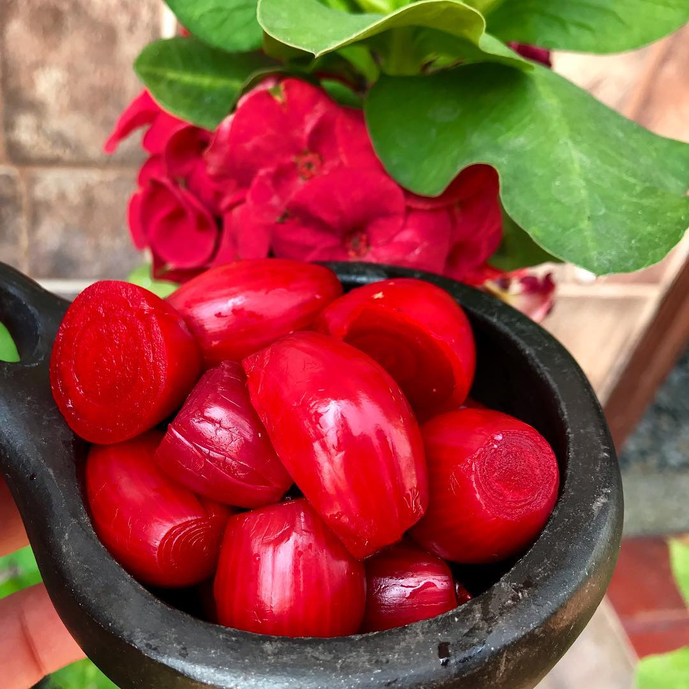
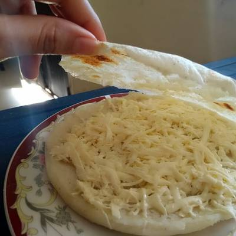
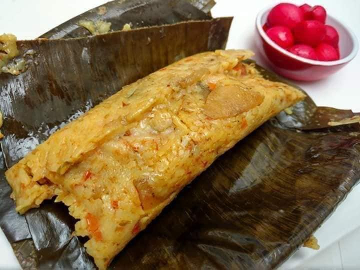

Pan ocañero
El pan ocañero es un producto muy representativo de los Santanderes, una de sus más famosas recetas nació como una bebida, que poco a poco se transformó en una delicia para propios y extraños.

Cebollitas ocañeras
Las cebollitas ocañeras son un tipo de cebolla pequeña, de color rojo claro y sabor picante.

Arepa ocañera
Es una arepa colombiana rellena de queso

Tamal ocañero
El tamal ocañero es conocido por su sabor robusto y equilibrado. La masa de maíz se impregna con los jugos y sabores de la carne y las verduras, creando una combinación deliciosa